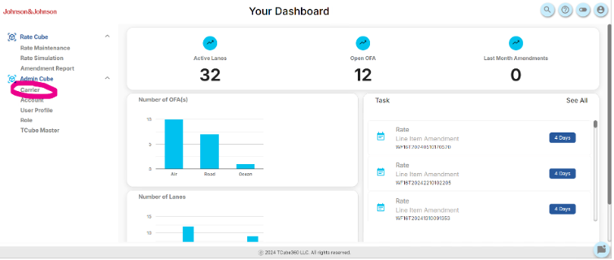
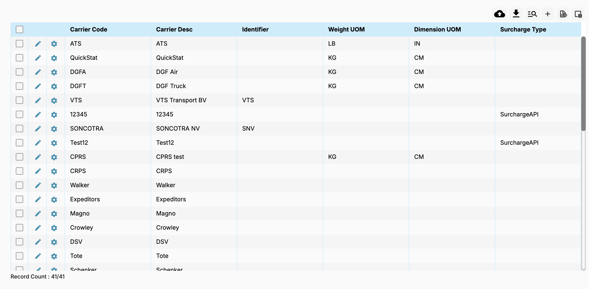
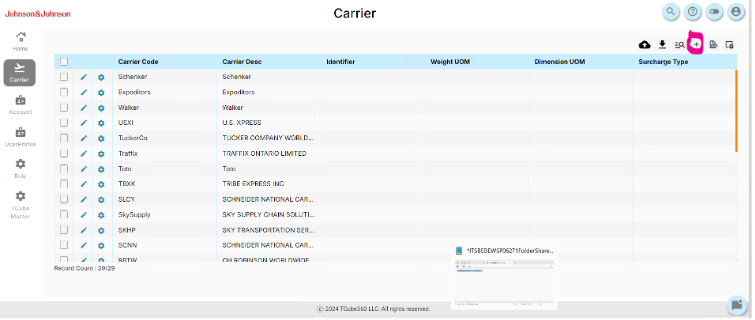

Carrier
Overview
The Carrier tab in Admin Cube is a comprehensive feature designed to manage carrier details effectively. This module provides a centralized interface for creating, updating, uploading, and exporting carrier data. With an intuitive dashboard, users can perform essential tasks like carrier setup, template downloads, and table exports.
Key Features of the Carrier Tab:
- Dashboard Navigation: Provides access to existing carriers in a table format, displaying carrier codes, descriptions, identifiers, weight units (UOM), dimension units (UOM), and surcharge types.
- Carrier Creation: Users can add new carriers by clicking the "+" icon. Details such as carrier code, description, weight UOM, dimension UOM, and surcharge type can be entered.
- Uploading Carrier Data: Users can upload carrier data in bulk using a CSV file by clicking the Cloud Upload button. Template CSV files can be downloaded to populate and upload carrier details seamlessly.
- Export Functionality: Export existing table data into an Excel file by clicking the Export to Excel button. Ensures easy offline access and data sharing. 
Uploading New Carriers
Creating a New Carrier Manually:
Click on the "+" icon in the top-right menu. Fill in the required fields:
- Carrier Code: A unique identifier as per the rate template.
- Carrier Description: A brief description of the carrier.
- Identifier, Weight UOM, and Dimension UOM: Specific details related to the carrier.
- Surcharge Type: Optional selection, based on additional charges.
Click Save to complete the carrier setup.

Uploading Multiple Carriers via CSV:
Use the Cloud Upload button on the upper right-hand corner of the table to upload an Excel file. Steps:
- Click on the Cloud Upload button.
- Drag and drop or browse to upload the Excel file.
- Ensure the CSV follows the template structure, which can be downloaded using the "Download Template" button.
Downloading the Template: Click the Carrier Template CSV download button to obtain the empty CSV file. Populate the file with new carrier data and upload it back to the system.
Table Features
- Column Information: Displays the carrier code, description, identifier, and various units of measurement.
- Search and Navigation: Utilize the search bar at the top of the table to locate specific carriers quickly.
- Edit Existing Carriers: Click the pencil icon to edit carrier details.
- Exporting Data: Click the Export to Excel button to download the table view into an Excel file.